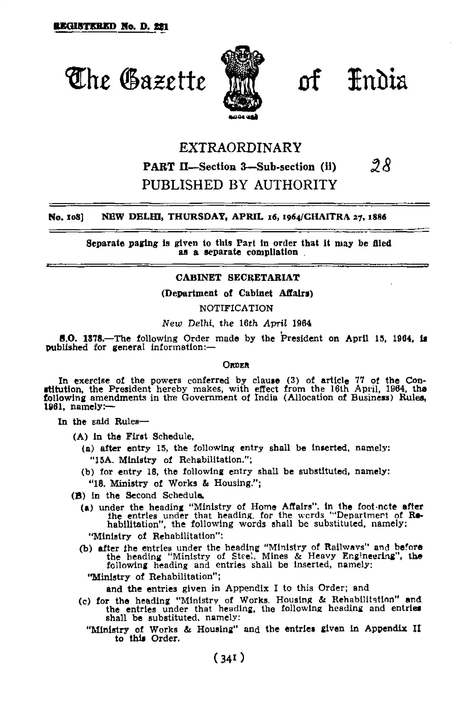
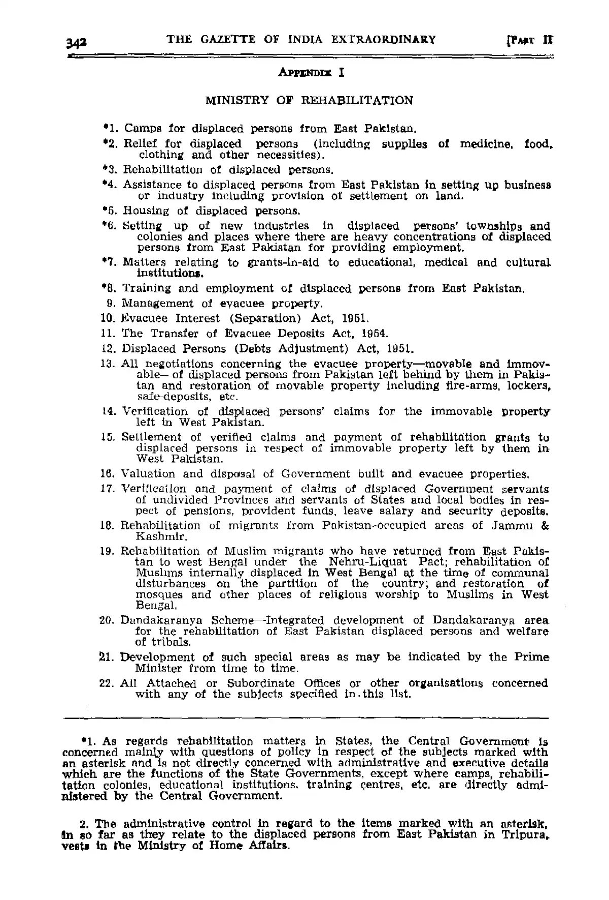
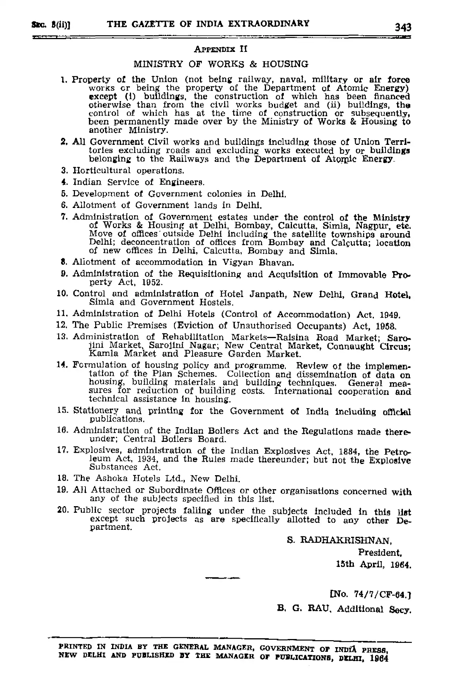

Amendment #28 (S.O. 1378, 1964)
5 changes: 2 to the First Schedule, 3 to the Second Schedule. 4 applied1 not applied
What it did to the ministries
- splitMinistry of Works, Housing and Rehabilitation splits into Ministry of Rehabilitation (22) and Ministry of Works & Housing (20) change 1, 2, 4, 5 · histories: Works, Housing and Rehabilitation, Rehabilitation, Supply
The order, page by page
Page 1 of 4

12345after Schedule 1 › entry 15
- 15A. Ministry of Rehabilitation.
applied at schedule 1 › ministry 15A in the Rules after #28
read hindi missing
Schedule 1 › entry 18
- 18. Ministry of Works & Housing.
applied at schedule 1 › ministry 18 in the Rules after #28
read hindi missing
Schedule 2 › Ministry of Home Affairs
for “Department of Rehabilitation” read “Ministry of Rehabilitation”
not applied (the change could not be placed in the Rules as read; see How this document was read)
after Schedule 2 › Ministry of Railways
- MINISTRY OF REHABILITATION
- 1. Camps for displaced persons from East Pakistan.
- 2. Relief for displaced persons (including supplies of medicine, food clothing and other necessities).
- 3. Rehabilitation of displaced persons.
- 4. Assistance to displaced persons from East Pakistan in setting up business or industry including provision of settlement on land.
- 5. Housing of displaced persons.
and 19 more
- 6. Setting up of new industries in displaced persons' townships and colonies and places where there are heavy concentrations of displaced persons from East Pakistan for providing employment.
- 7. Matters relating to grants-in-aid to educational, medical and cultural institutions.
- 8. Training and employment of displaced persons from East Pakistan.
- 9. Management of evacuee property.
- 10. Evacuee Interest (Separation) Act, 1951.
- 11. The Transfer of Evacuee Deposits Act, 1954.
- 12. Displaced Persons (Debts Adjustment) Act, 1951.
- 13. All negotiations concerning the evacuee property-movable and immovable of displaced persons from Pakistan left behind by them in Pakistan and restoration of movable property including fire-arms, lockers safe-deposits, etc.
- 14. Verification of displaced persons' claims for the immovable property left in West Pakistan.
- 15. Settlement of verified claims and payment of rehabilitation grants to displaced persons in respect of immovable property left by them in West Pakistan.
- 16. Valuation and disposal of Government built and evacuee properties.
- 17. Verification and payment of claims of displaced Government servants of undivided Provinces and servants of States and local bodies in respect of pensions, provident funds, leave salary and security deposits.
- 18. Rehabilitation of migrants from Pakistan-occupied areas of Jammu & Kashmir.
- 19. Rehabilitation of Muslim migrants who have returned from East Pakistan to west Bengal under the Nehru-Liquat Pact; rehabilitation of Muslims internally displaced in West Bengal at the time of communal disturbances on the partition of the country; and restoration of mosques and other places of…
- 20. Dandakaranya Scheme Integrated development of Dandakaranya area for the rehabilitation of East Pakistan displaced persons and welfare of tribals.
- 21. Development of such special areas as may be indicated by the Prime Minister from time to time.
- 22. All Attached or Subordinate Offices or other organisations concerned with any of the subjects specified in this list.
- 1. As regards rehabilitation matters in States, the Central Government is concerned mainly with questions of policy in respect of the subjects marked with an asterisk and is not directly concerned with administrative and executive details which are the functions of the State Governments, except where…
- 2. The administrative control in regard to the items marked with an asterisk in so far as they relate to the displaced persons from East Pakistan in Tripura vests in the Ministry of Home Affairs.
applied at schedule 2 › ministry MINISTRY OF REHABILITATION in the Rules after #28
read hindi missing
Schedule 2 › Ministry of Works. Housing & Rehabilitation
- Ministry of Works & Housing
- 1. Property of the Union (not being railway, naval, military or air force works or being the property of the Department of Atomic Energy) except (1) buildings, the construction of which has been financed otherwise than from the civil works budget and (ii) buildings, the control of which has at the…
- 2. All Government Civil works and buildings including those of Union Territorles excluding roads and excluding works executed by or buildings belonging to the Railways and the Department of Atomic Energy.
- 3. Horticultural operations.
- 4. Indian Service of Engineers.
- 5. Development of Government colonies in Delhi
and 15 more
- 6. Allotment of Government lands in Delhi
- 7. Administration of Government estates under the control of the Ministry of Works & Housing at Delhi, Bombay, Calcutta, Simla, Nagpur, etc. Move of offices outside Delhi including the satellite townships around Delhi; deconcentration of offices from Bombay and Calcutta; location of new offices in…
- 8. Aliotment of accommodation in Vigyan Bhavan.
- 9. Administration of the Requisitioning and Acquisition of Immovable Property Act, 1952.
- 10. Control and administration of Hotel Janpath, New Delhi, Grand Hotel Simla and Government Hostels.
- 11. Administration of Delhi Hotels (Control of Accommodation) Act. 1949.
- 12. The Public Premises (Eviction of Unauthorised Occupants) Act, 1958.
- 13. Administration of Rehabilitation Markets-Raisina Road Market; Sarojini Market, Sarojini Nagar; New Central Market, Connaught Circus Kamla Market and Pleasure Garden Market.
- 14. Formulation of housing policy and programme. Review of the implementation of the Plan Schemes. Collection and dissemination of data on housing, building materials and building techniques. General measures for reduction of building costs. International cooperation and technical assistance in housing.
- 15. Stationery and printing for the Government of India including official publications.
- 16. Administration of the Indian Boilers Act and the Regulations made thereunder; Central Boilers Board.
- 17. Explosives, administration of the Indian Explosives Act, 1884, the Petroleum Act, 1934, and the Rules made thereunder; but not the Explosive Substances Act.
- 18. The Ashoka Hotels Ltd., New Delhi.
- 19. All Attached or Subordinate Offices or other organisations concerned with any of the subjects specified in this list.
- 20. Public sector projects falling under the subjects included in this list except such projects as are specifically allotted to any other Department. §. RADHAKRISHNAN
applied at schedule 2 › ministry Ministry of Works, Housing and Rehabilitation. in the Rules after #28
read hindi missing
Page 2 of 4

Page 3 of 4

Page 4 of 4
How this document was read
Known issues
| Change | Issue | Known as |
|---|---|---|
| 3 | change 3: the words to substitute are not in schedule 2 › ministry MINISTRY OF HOME AFFAIRS | Home Affairs' structure |
From the Government of India (Allocation of Business) Rules, 1961 and their amendments, as published by the Cabinet Secretariat (cabsec.gov.in), read by orgpedia. The readings of the older scanned gazettes have known gaps.